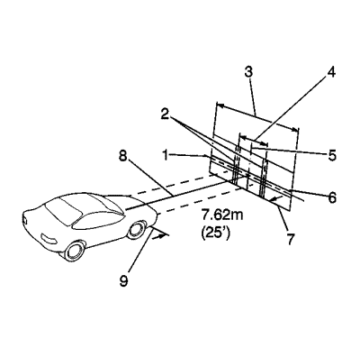
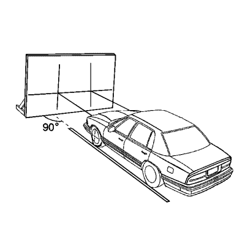
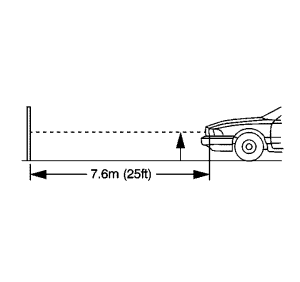
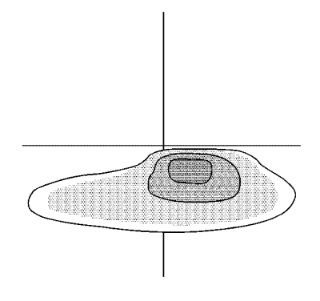
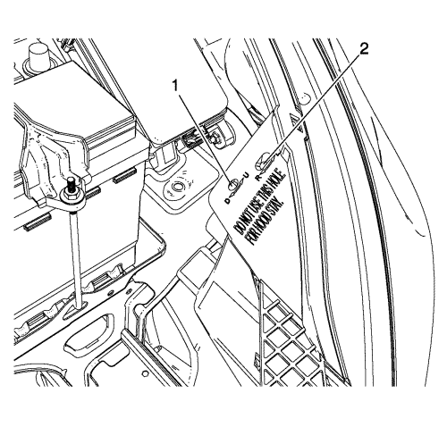

Enfoque de los faros
Procedimiento de preparación de apuntado visual
Nota: Algunas leyes estatales y locales especifican requisitos para el apuntado de faros. Observe todas estas leyes al llevar a cabo estas operaciones de apuntado de faros.
En el apuntado de los faros debe comprobarse:
| • | Cuando se instala un nuevo juego de faros. |
| • | Si el servicio o las reparaciones en la zona del extremo delantero han afectado, o pueden haber afectado, a los faros o a su montaje. |
La pantalla de apuntado debe satisfacer los siguientes criterios:
| • | El área constará de una superficie horizontal lo suficientemente grande para dar cabida a un vehículo y con 7,62 m adicionales (25 pies) medidos desde la parte delantera de las luces hasta la pantalla de apuntado. |
| • | La pantalla tendrá 1,52 m (5 pies) de altura x 3,66 m (12 pies) de anchura, con una superficie blanca mate bien protegida de luz ajena, y adecuadamente ajustada al suelo sobre el que descansa el vehículo. Se tomarán las medidas adecuadas para alinear de forma paralela la pantalla de apuntado con el vehículo. |
| • | La pantalla estará provista de una línea central vertical, de dos cintas verticales ajustables lateralmente, y de una cinta horizontal ajustable verticalmente. |
| • | Si no hay disponible comercialmente una pantalla de apuntado, la pantalla consistirá en una pared vertical con un área ininterrumpida de aproximadamente 1,83 m (6 pies) de altura y 3,66 m (12 pies) de anchura. La superficie debe estar acabada con una pintura blanca no brillante lavable. |

| • | Una vez colocada la pantalla de apuntado en un lugar permanente, pintar una línea de referencia en el suelo directamente por debajo de la lente de los faros para indicar el lugar adecuado de los faros cuando se apunten: |
| - | Distancia entre faros (1) |
| - | Línea central de la pantalla (2) |
| - | Puntero vertical ajustable (3) |
| - | Cinta horizontal ajustable (4) |
| - | Diagrama de la pantalla de luz (5) |
| - | Línea central vertical delante de la posición del puntero del faro derecho (6) |
| - | Puntero vertical ajustable |
| - | Línea central horizontal de los faros |
| - | Línea central vertical delante del faro izquierdo |
Antes del apuntado de los faros, deben tomarse las siguientes medidas:
- Retirar la nieve, hielo o barro del vehículo.
- El vehículo debe tener el depósito de combustible lleno.
- Parar todos los demás trabajos en el vehículo.
- Si se ha efectuado algún servicio en el vehículo, asegurarse de que todos los componentes están en su lugar original.
- El vehículo debe estar situado sobre una superficie horizontal.

- Los neumáticos del lado izquierdo del vehículo deben estar alineados con la línea de referencia que se extiende desde la pantalla, con los faros alineados con la línea de referencia.
- No situar carga dentro del vehículo.
- El vehículo debe tener unos 75 kg (165 lib.) en el asiento del conductor.
- Inflar los neumáticos a las presiones adecuadas.
- Simular las cargas del vehículo si el uso previsto del vehículo es el transporte de cargas pesadas o el arrastre de un remolque.
- Bascular el vehículo para estabilizar la suspensión.
- Encender los faros en luz de cruce y observar los bordes izquierdo y superior de la zona de alta intensidad de la pantalla. Los bordes de la zona de elevada intensidad deben caer dentro de las especificaciones.
Procedimiento de apuntado de faros
- Abra el capó.

- Medir del suelo al centro de la bombilla del faro. Algunos faros tienen un punto de apuntado marcado en la lente del faro
- En la pantalla, medir desde el suelo y colocar la cinta horizontal a la distancia medida.
- Medir desde la línea de referencia en el suelo hasta la línea central de la bombilla del faro izquierdo.
- En la pantalla, medir desde la línea de referencia y colocar la cinta vertical a la distancia medida.
- Medir desde la línea de referencia en el suelo hasta la línea central de la bombilla del faro derecho.
- En la pantalla, medir desde la línea de referencia y colocar la cinta vertical a la distancia medida.

Nota: NO cubra el faro. Esto puede provocar una acumulación excesiva de calor.
- Encender los faros de luz de cruce. Bloquear la luz proyectada en la pantalla procedente del faro del lado del acompañante.

- Ajuste el tornillo de apuntado vertical 1 y el tornillo de apuntado horizontal 2 de los faros conforme a las especificaciones requeridas por las autoridades estatales o locales, o como se muestra en el paso número 8.
- Repetir el procedimiento de apuntado para el faro del lado del acompañante mientras se bloquea la luz proyectada en la pantalla procedente del faro del lado del conductor.
- Apagar los faros.
- Cierre el capó.
| © Copyright Chevrolet Europe. All rights reserved |